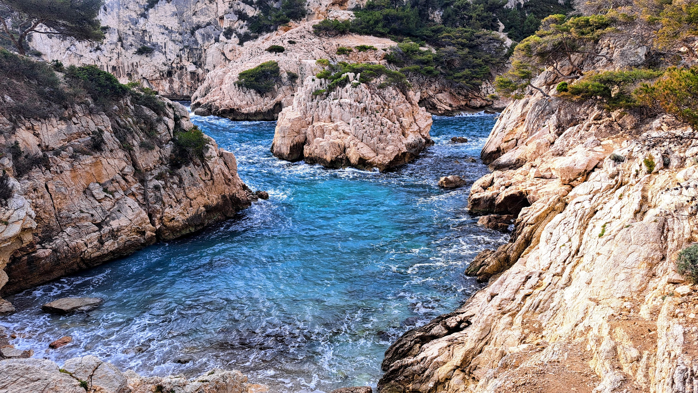
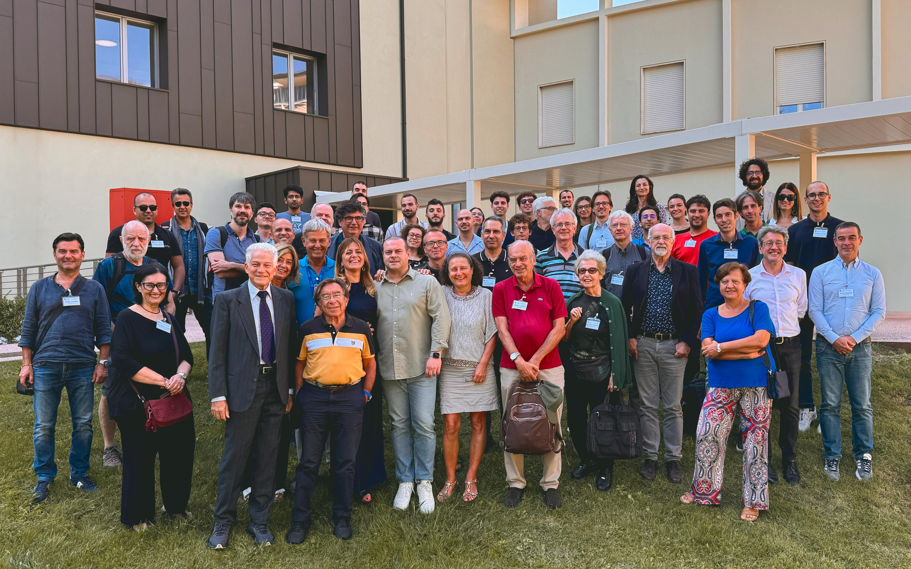
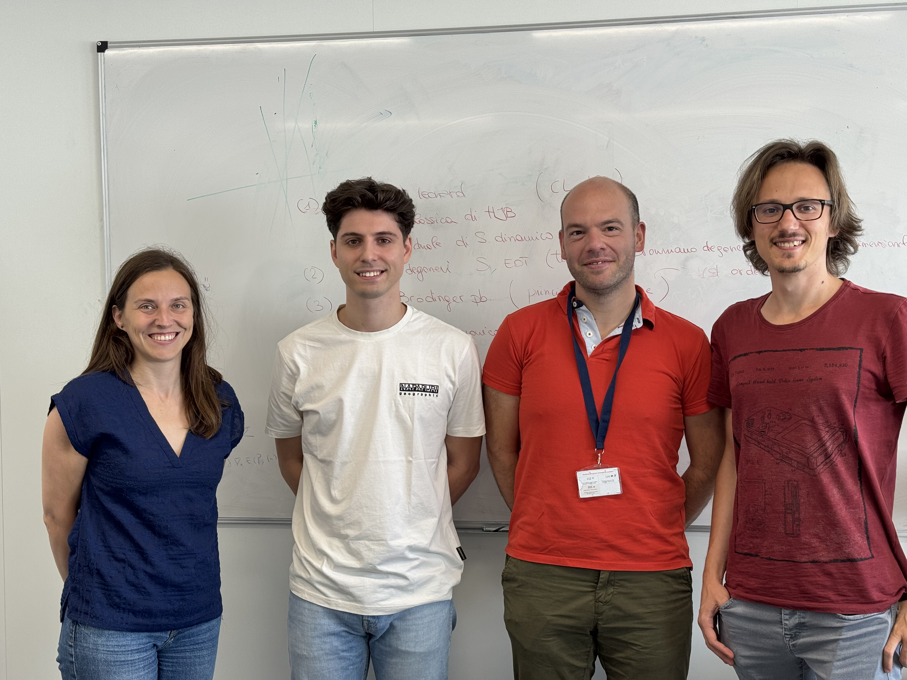
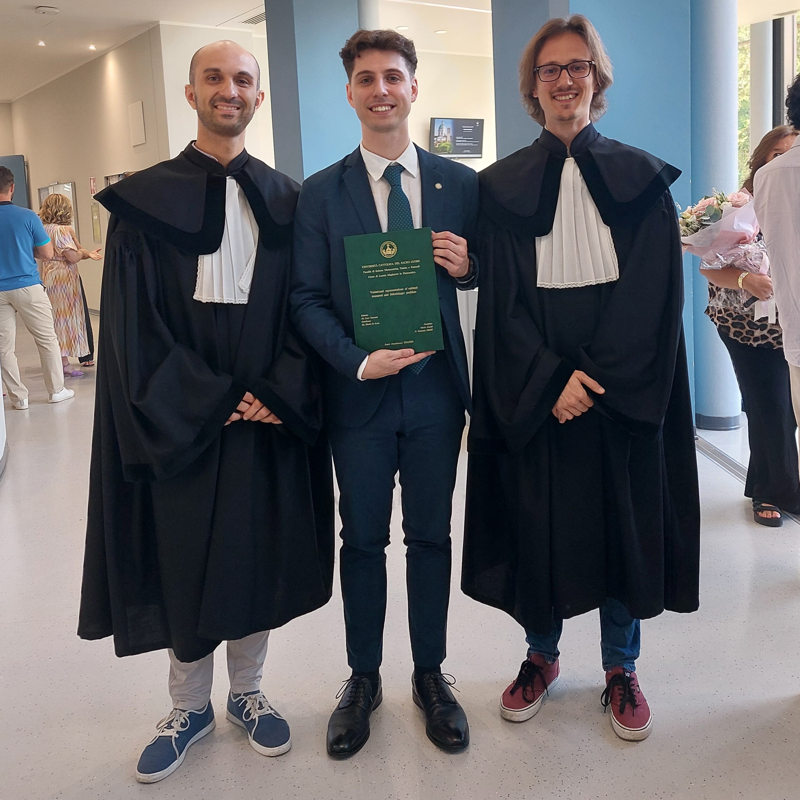

January 12, 2025 - January 16, 2025
I have been at CIRM (Marseille) for the workshop "Calculus of Variations and applications".

I am a Ph.D. student in Mathematics at Université Paris-Saclay, Paris (France), under the supervision of Prof. Luca Nenna and Prof. Simona Rota-Nodari.
I am a fellow of the MathPhDInFrance program, co-funded by the Marie Skłodowska-Curie Actions (MSCA COFUND), and coordinated by the Fondation Sciences Mathématiques de Paris (FSMP).
I am also a member of the Inria team ParMa (Inria Saclay) and ANR GOTA.
The macro-set that encompasses most of my research interests is deeply rooted in the Calculus of Variations and the study of variational methods for solving minimum problems. My Ph.D. research project deals with regularized optimal transport problems.
See my CV
I have been at CIRM (Marseille) for the workshop "Calculus of Variations and applications".

I partecipated to the workshop in honour of Marco Degiovanni's 70th birthday "Advances in Calculus of Variations and Nonlinear Analysis".

I visited Prof. Luca Nenna at Université Paris-Saclay, Paris (France).

I obtained the master's degree in Mathematics.